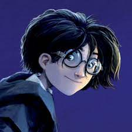
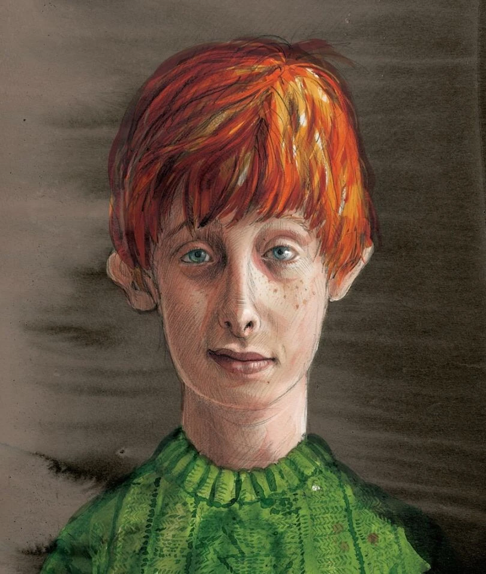
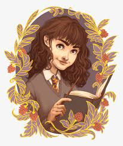
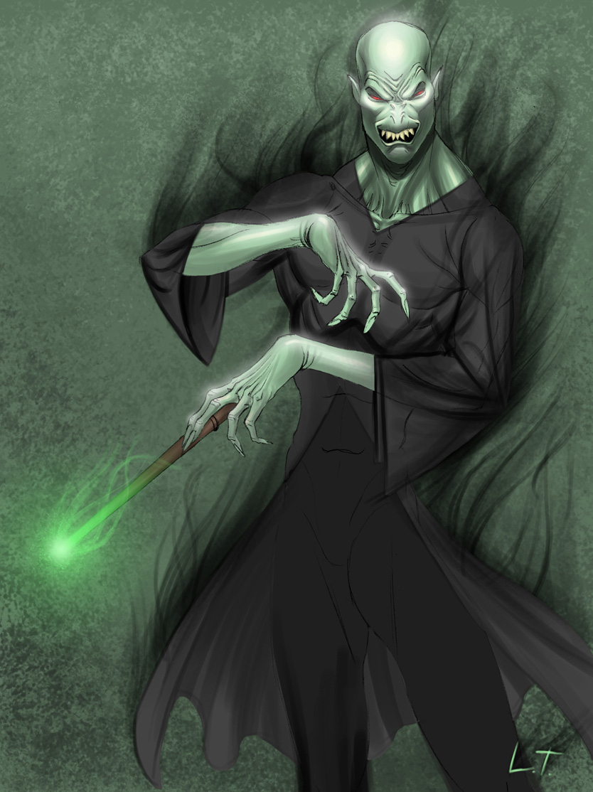
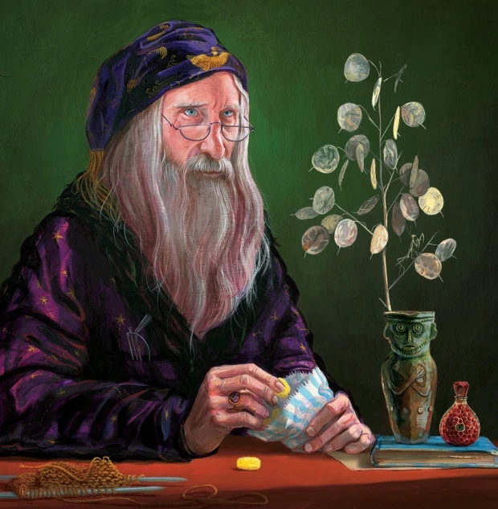

Picture |
Name |
Description |
|  |
Harry Potter |
humble, brave, and loyal. Harry will do anything for his friends, including risking his own life. He stands up for the weak (like Neville Longbottom) and is willing to take on the evil and powerful, from snobbish classmate Draco Malfoy all the way up to He Who Must Not Be Named. O.K., “Voldemort” – there, we said it! |
|  |
Ron Weasley |
a bit lazy and (at times) hot-headed, but also funny and intensely loyal. Ron is everything Harry could ask for in a best friend/sidekick, and he never hesitates to join Harry on a risky adventure. Though he might get jealous of Harry’s fame and fortune, Ron never fails to support him. |
|  |
Hermione Granger |
Hermione's most prominent features include her prodigious intellect and cleverness. She is levelheaded, book-smart, and always very logical. Throughout the series, Hermione uses the skills of a librarian and teacher to gather the information needed to defeat Voldemort, the "Dark Lord". |
|  |
Voldemort |
ruthless, cold, and powerful. Voldemort is evil incarnate, and has no other motive than to keep himself alive, no matter the cost to his soul. He has killed countless people, and is unable to show any remorse for his actions. The only thing he fears is death, and he has made it his mission to ensure that he can never be killed. Though a brilliant and powerful leader, his evil ways make his talents a dangerous waste, as he coerces other like-minded wizards to help him terrorize the wizarding and Muggle worlds. |
|  |
Dumbledore. |
wise, calm, and powerful. Dumbledore is perhaps the most respected wizard of all time; his contributions to the wizarding world are innumerable. He often appears to have the answer to everything, and has powers seemingly beyond that of any other wizard. He rarely lets his emotions get the better of him, always solving problems with a calm and collected demeanor. Despite his rather dark, tragic past, his wisdom and kindness make the now-elderly Dumbledore the supreme role model for Harry. |